计算力的一种优美方法——1580年
从16世纪80年代开始，西蒙·斯蒂文（1548—1620）和伽利略的研究成果让工程师可以把机械原理转化为数学形式。这样的转变通常涉及将一种作为准则的物理机理转变为抽象的数学模型的过程，例如力的平行四边形法则。
在数学与物理学领域，力的平行四边形法则是计算两个或两个以上的力作用于同一个物体的合力的巧妙方法。
一个力就是一个矢量，由于一个力既有大小又有方向，因此可以通过一条有方向的直线去表示。
在物理学上，一个倾斜的表面通常被称为斜面。对作用于斜面上的物体的力进行分析是很重要的。在我们给出的示意图里，作用于斜面上的两个力可以用斜面上某一点引出的矢量来表示。力的大小等于作用在这个斜面上的所有小金属球的重力之和。这些力（黑色部分）表示重力，它是一种向下的力。但是，任何一个斜面上的物体都存在着至少两个作用力。其中另一个作用力是正常的作用力（蓝色的），这种作用力始终与斜面保持垂直状态。根据力的平行四边形法则，重力可以被分解为两个分力：一是与斜面平行的力，另一个就是与斜面垂直的力。
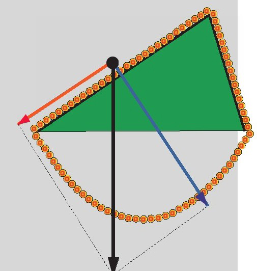
西蒙·斯蒂文的球圈
西蒙·斯蒂文是一位来自佛兰德的数学家和工程师（1548—1620），也是一位与笛卡儿、伽利略等人齐名的真正的文艺复兴先驱，他最大的贡献是对静力学（对处于平衡状态的力进行研究的科学）及流体静力学等方面的研究。
斯蒂文最著名的贡献就是发现了斜面定律——通过绘制“球圈”进行验证。这个图形曾出现在他1615年出版的著作《称重法原理》（The Elements of the Art of weighing）一书的扉页上。
斯蒂文提出的斜面定律以及用于分解各种力的矢量法则（力的平行四边形法则），作为一种思维实验是非常有价值的，因为它是从普遍的物理原理——能量守恒定律推演出机械定理的最早的例子之一。
他面临的问题是：要确定力F的大小，就要将一个绝对光滑的物体（已知重量为W）放在一个绝对光滑、没有摩擦力的斜面上。
他提出的法则有一个前提条件，那就是倾斜角较大的斜面上的一个较轻物体，可以抵消倾斜角较小的斜面上一个较重物体的力。他通过自己设想出的“球圈”进行思维实验，试图解释这个问题。所谓的“球圈”，如图所示，是一个双斜面，周围有一串连接起来的小球。斯蒂文的推理过程是这样的：当斜面下方那部分小球被移走时，其他的事物依然处于一种静止平衡状态，不会发生任何改变。除了这种情况外，他还会让“某些东西发生移动”，这时，球圈就会随之变为类似于永动机的装置了。因此，将悬挂在空中的“自由”小球移走后，整个系统依然会处于一种平衡状态。正因为如此，斯蒂文意识到，当斜面上的重物处于一种平衡状态时，那么重物本身的重量与斜面的长度是存在一定比例关系的。
他必须对斜面两边的空间的数值进行计算，接着他就找到了支持他提出的原理的依据。
斯蒂文对他提出的这个具有美感的几何论题感到非常高兴与自豪，于是他在卷首写下一句话——这句话后来也成了他的座右铭：“看上去让人惊讶的东西，其实没有什么好惊讶的。”物体在斜面上维持的平衡状态是由每一边向下的力之间的关系以及支撑这些力的不同角度决定的。
用现代术语来说，这样的一种力的分解就被称为力的平行四边形法则。
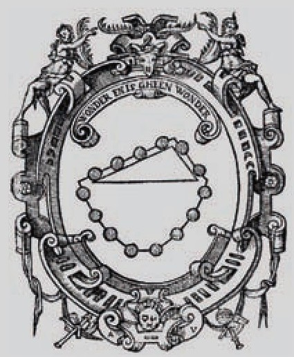
——伽利略·加利莱伊
伽利略·加利莱伊（1564—1642）
伽利略·加利莱伊是意大利著名的物理学家、数学家和天文学家，他的一生都与科学革命有着紧密的联系。科学革命大约是从16世纪中期开始的。在他的诸多伟大成就里，就有他对匀加速运动的第一次系统研究。伽利略采用基于实验的研究方法，这是自亚里士多德的抽象方法以来最具划时代意义的突破，象征着实验科学的开端。他只使用了一些相对简单、粗糙的实验工具，就取得了巨大的科学成就。
斜面与伽利略——1600年
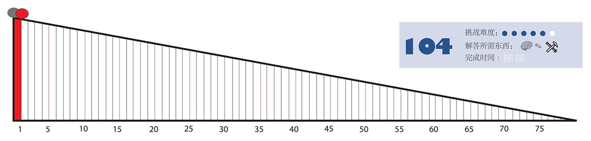
如何计算地心引力所具有的加速度呢？
在那个时候，要想回答这个问题是非常困难的。伽利略在进行实验时面临的一个重大问题，就是物体在自由落体状态下掉落的时间太短暂了，根本无法用现有的实验工具去测量物体掉落的准确时间。他想出了一个创造性的方法，那就是将物体放在一个斜面上，减缓重力的作用，同时又能维持重力加速度。这样的一种方法让他能够计算出地心引力造成的重力加速度的准确数值。
在钟摆摇动的同时，他释放了一个小球。钟摆每摆动一次，这个小球都会在降落过程中击打到一个小铃。我们重复伽利略的实验，在斜面上释放一个小球，然后记录小球在1秒内滑落的位置。
接着，我们可以将整个斜面划分为多个长度单位（如图所示）。你能够在2秒、3秒、4秒、5秒、6秒、7秒、8秒或9秒的时间内记录下小球所处的位置吗？
如果斜面的坡度更大一些或高度更高一些，这些记号的位置是否会发生改变呢？
通过改变一个平面的倾斜角度，在小球落到斜面底端时，它的速度是否会发生改变呢？
伽利略的悖论——公元1600年
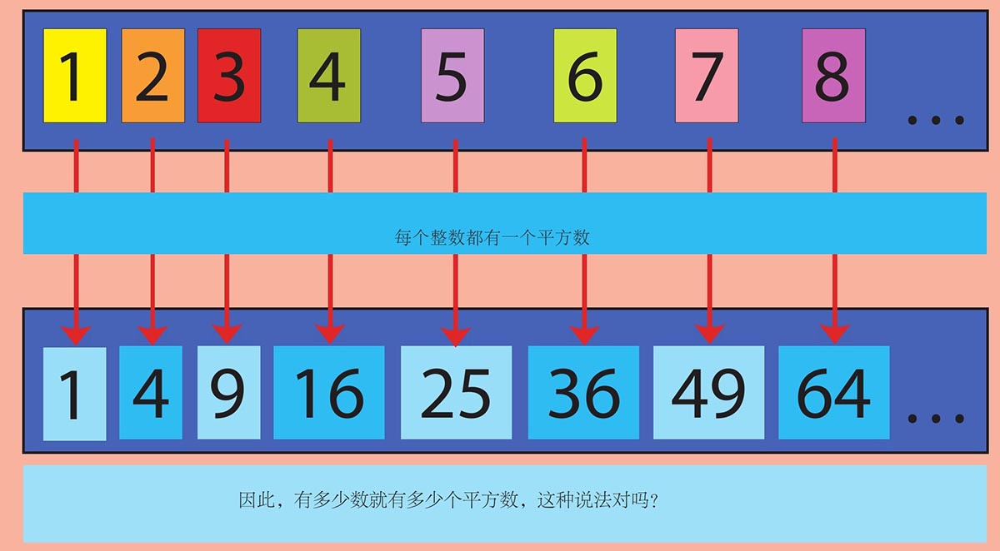
请看上图提出的这个问题，你会有怎样的想法呢？是不是真的有多少个数，就有多少个平方数呢？
伽利略的悖论展示了无限集所具有的一个惊人属性。在他最后的科学著作《两种新科学的对话》里，伽利略对正整数做出了明显相悖的论述。首先，他认为一些数是平方数，而另一些数则不是，因此所有的数（包括平方数和非平方数）放在一起，必然要比单纯的平方数更多一些。但是，对于每一个平方数，都必然存在着一个与此对应的正整数，也就是这个平方数的平方根；对每一个数而言，也都必然存在着一个它的平方数——因此不大可能出现一种数比另一种数更多的情况。在无限集中，这种一一对应的思想虽然不是他第一个提出的，却是早期就被应用的。
伽利略总结出来一点，小于、等于或大于等概念只可以运用到有限集里，却不能运用到无限集里。在19世纪，德国数学家格奥尔格·康托尔运用相同的方法，证明这样的限制是不需要的。我们完全有可能以一种有意义的方式对无限集进行对比（他认为整数与平方数的无限集是同样大小的），而某些无限集要比另一些无限集更大一些。
伽利略的钟摆——1600年
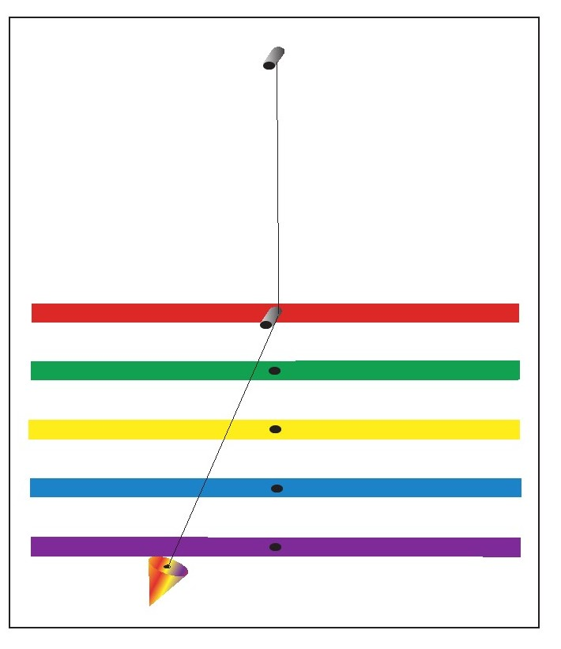
在过去很长一段时间里，钟摆一直让科学家们为之着迷。伽利略是第一位发现钟摆具有独特属性的科学家。他通过简单的观察，得出一个结论，即钟摆能够计算时间、测量地心引力并且检测相对运动状态。
他所设定的简单实验装置不需要多加说明。在钟摆处于摆动状态时，在左图中一个小洞里插入一根钉子。钉子的运用能够缩短钟摆的有效长度。这样的做法会如何影响钟摆的运动呢？如果连接钟摆的线变得更短，又会发生什么呢？钟摆摆动的速度是会变得更快还是更慢呢？
连接钟摆的线变短，是否会改变钟摆的摆动频率呢？
通过这样一个简单的实验与观察，伽利略得出了一个革命性的结论，并且在1642年发明了摆钟。
比萨大教堂圆顶，前面挂着伽利略吊灯，这些吊灯使伽利略发现了钟摆的等时性原理。
双锥体上坡——一个机械的反重力悖论
“向上滚动的双锥体悖论”是威廉・利伯恩（1626—1719）提出的。利伯恩是一位土地测量员，同时也是位多产的作家，他出版了《有趣有益》这本娱乐性数学书，里面包括了“向上滚动的双锥体悖论”这个巧妙的机械谜题——一个双锥体在两条倾斜的轨道上向上滑行。
这个模型的运转方式是违反直觉的，因为当我们将双锥体放在斜面的最低处时，它会向上滚动，这似乎违反了地心引力。你能解释这个双锥体的“奇怪表现”吗？
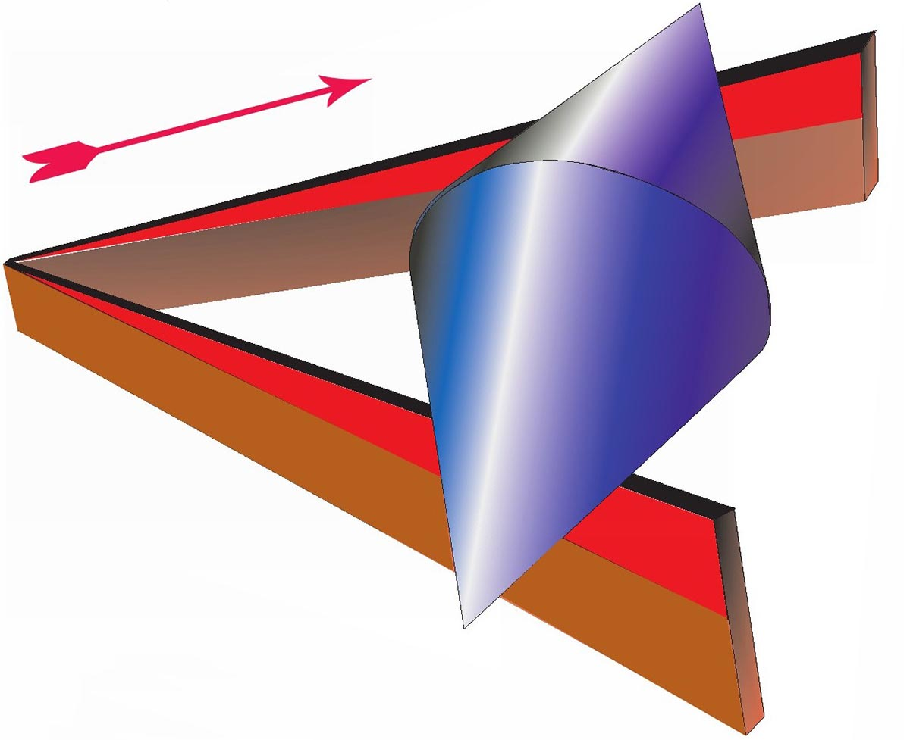
反重力：从牛顿到爱因斯坦
反重力的概念与一个最宏大的科学论题——“宇宙的起源”——存在着联系。当爱因斯坦发现广义相对论时，他遇到了一个棘手的问题：为什么重力不会使宇宙中的物体向内坍塌呢？
艾萨克·牛顿（1642—1727）在研究万有引力时也面临着相似的问题。牛顿对此的解释是：上帝让物体处于分离状态。在这个问题上，爱因斯坦不愿意牵涉到上帝，他的解答方法就是在重力的基础上，加入一种反重力。在20世纪20年代，一切都发生了改变。宇宙学家们采用了一种全新的观点，即宇宙是在某个有限的时刻被创造出来的，从最初一个极小的超原子开始，通过大爆炸与膨胀的方式慢慢形成。这种观点逐渐演变成了现在的“大爆炸理论”，它不需要相信反重力的存在。这个理论看上去是正确的，爱因斯坦最终也认可了这一说法。但是，这个故事有了一点转折。让人感到惊讶的是，天文学家们后来发现，宇宙其实是在不断加速的，银河系中的星体则也在以越来越快的速度彼此分离。然而，由于重力的作用，宇宙大爆炸形成的扩张速度应该会减慢，这样就又出现了一个问题。对此最好的解释就是，宇宙中存在着一种反重力。因此，即便当爱因斯坦认为自己是错误的，并且准备承认这个事实的时候，他的理论最终还是被证明是正确的。
反重力铁路——1829年
伽利略发明的反重力双锥体让人着迷，激发了一位维多利亚时代的发明家的灵感——他于1829年提出了在遵循双锥体运动原理的基础上，建造一条反重力铁路的构想。
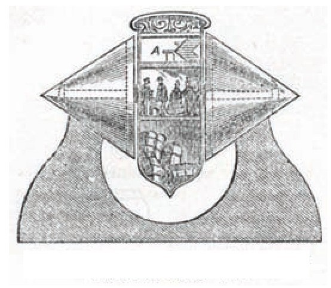
算额（Sangaku）——1603年
算额（日语意为“计算表”）是起源于日本江户时代的一种极具美感、上面刻有几何问题或数学定理的木板。它们通常会出现在神社或佛寺中，作为贡品或是对朝拜的人发出的一种挑战。
在江户时代，日本与其他西方国家的贸易往来是受到严格管控的，这也是算额上出现的日本数学与西方整体的数学发展相互孤立的原因。比如说，微分与积分的关系（微积分基本定理）就一直不为世人所了解。因此，算额在计算面积与体积等内容时，只能通过无穷级数的展开与逐项计算来解答。
日本著名数学家藤田嘉言（1765—1821）在1790年出版的《神壁算法》一书中首次收集并记载了算额问题，1806年这本书又出版了续集。
日本的算额定理
如图所示，你可以看到左边是一个随意画出，并用三角形分开的凸面不规则八边形，每个三角形的内切圆如图所示。
右边是同一个八边形用另一种方法进行的三角形划分。
你能计算出两种不同的三角形分割法中内切圆的大小关系吗？
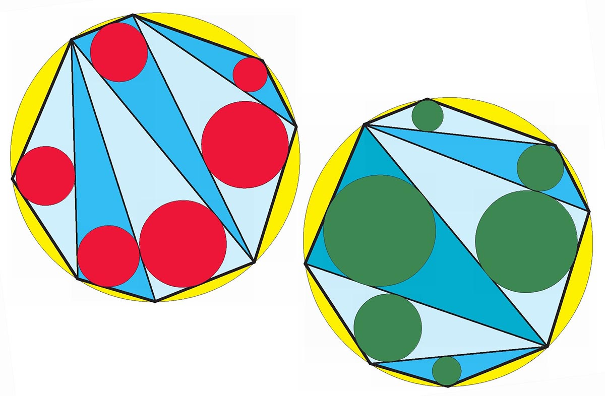
开普勒猜想——1600年
约翰尼斯·开普勒（Johannes Kepler）（1571—1630），德国天文学家。他发现了在一个平面内放置球体的两种方法：方块拼排与六方密堆积。
开普勒猜想是以约翰尼斯·开普勒的名字命名的，这是一个在三维的欧几里得空间内关于球体填充问题的数学猜想。这个猜想是这样阐述的：用大小完全相同的球体去填充一个空间，无论怎样填充，都不会比六方密堆积具有更大的平均密度。这种方法的堆砌密度要高于74%。
1998年，托马斯·黑尔斯在对费耶什·托特提出的一种观点进行研究时，宣布自己找到了证明开普勒猜想的证据。黑尔斯通过运用复杂的电脑计算去对多个单独的例子进行详细检查，从而得出这个证明。不少数学家都表示，他们“99%肯定”黑尔斯提出的证据是正确的，因此开普勒当年提出的猜想几乎可以被视为一个定理。
方块拼排是将球体一层层堆积起来，以一种彼此垂直的状态进行排列，或者将第一层的球体都嵌入它下方四个球体围成的空隙中。
在进行六方密堆积时，同样存在着两种可能性：对齐的方式或交错的方式。但是六方密堆积的交错层与对球体进行方块拼排的交错层达到的效果是一样的。如果球体排列可以扩展的话，那么就形成了一些三维空间的形状，包括立体晶格形状的立方体、六方晶格、六角棱镜以及面心立方晶格——开普勒的菱形十二面体，一种最为紧密的堆积方式。
堆积的效率可以通过堆积物体的密度去衡量（比如空间被球体填充的比例）。
这是在一个平面上填充物体的比例：
1.正方晶格0.7854
2.六边形晶格0.9069
这是在三维空间内填充物体的比例：
3.立方晶格0.5236
4.六方密堆积0.7404
5.无规密堆积0.64
球体堆砌问题与用几何实体彻底填满空间密切相关。开普勒设想，每一个球体都能延伸，填满中间的空隙，进而获得这样的几何实体。
球体填充问题
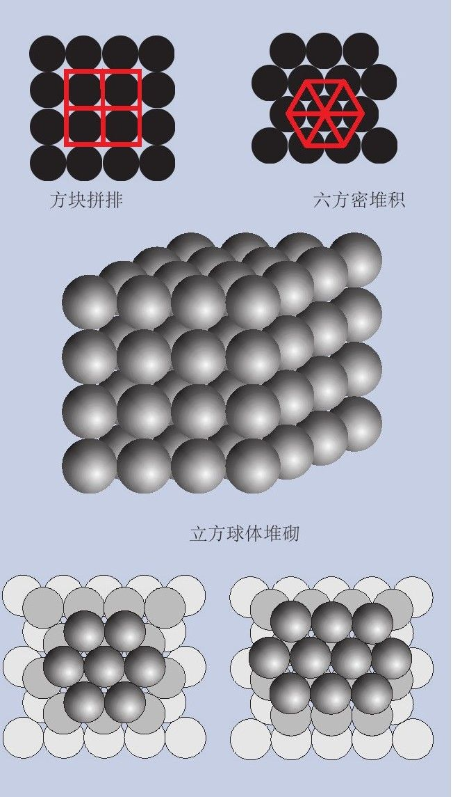
如图所示，在一个平面里，用球体填满空间的办法有两种。
立方球体堆砌：在正方形层，相应的球体可以通过垂直堆积的方法完成。
六方密堆积：有两种办法可以添加一个六面体堆砌层。这两种方法区别在于层与层之间是如何堆砌的。六方密堆积里，每隔两个堆层，球体的堆砌方式是相同的，刚好在第一个堆层里的球所处的位置。在面心立方密堆积里，每隔一个堆层，球体的堆砌方式是相同的。[此书分享微信wsyy5437]
装球的箱子——1600年
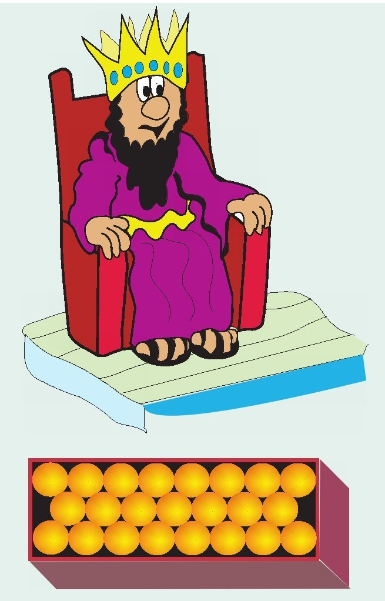
“从前，有一个国王将他的所有财富都做成大小完全相等的金球，他将这些金球紧密地堆放在一个大箱子里。他知道这个箱子是满的，因为箱子不会发出任何声响。很快王后就从箱子里拿走了一些金球，但箱子并没有发出声响；接着管理箱子的人又拿走了一些金球，箱子依然没有发出声响；接着首相又从箱子里拿走了一些金球，箱子依然没有发出声响。”
这个有关国王财宝的故事是否真实呢？在一个长方形的箱子里装着23个金球，这些金球都以一种紧密的方式被堆积起来。你能从箱子内拿走几个金球，并保证剩下的金球依然处于紧密的状态吗？当然，我们所说的“紧密”是指彼此接触的球体再也无法移动其位置。
在一个正方形框里装入105个球
如果每个填充球体的直径是1个单位长度，你可以很容易地在一个边长10个单位长度的正方形框里装下100个球体。如果以一种六边形的方式去排列这些球体，你可以在同样大小的正方形里放下105个球体，如图所示。
但是，你能做得更好吗？
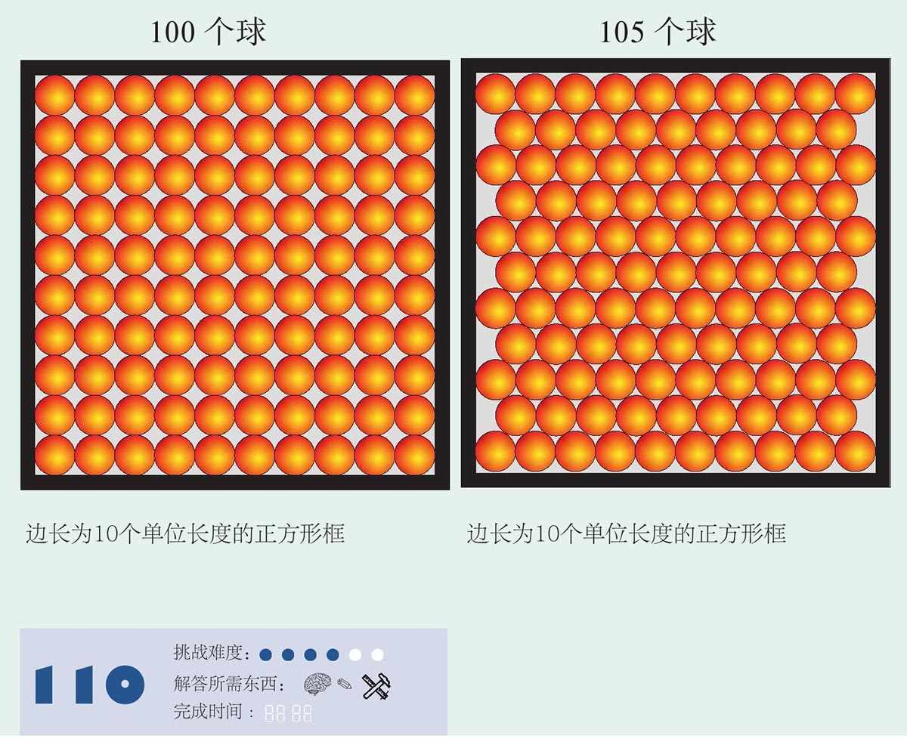
梅齐里亚克的砝码问题——1612年
1612年，法国学者克劳德·加斯帕尔·巴谢·德·梅齐里亚克（Clauded Gaspar Bachet de Méziriac）（1581—1638）出版了一本名为《有趣且让人愉悦的数字问题》的数学谜题集。这本书后来成了消遣数学的经典书籍，迄今出版了五版。这本书强调的是算术层面而非几何层面上的谜题，其中包括这些经典问题：数的思考、过河问题、幻方、约瑟夫斯谜题、测重、倾倒流体以及其他谜题。
梅齐里亚克的书中包含着经典的测重问题。W.劳斯·鲍尔认为梅齐里亚克在17世纪早期对这一问题做了最早的记录，并将这一问题称为“梅齐里亚克砝码问题”。然而，这一问题可以追溯到1202年的斐波那契数学问题，使之有可能成为最早的整数分拆问题。
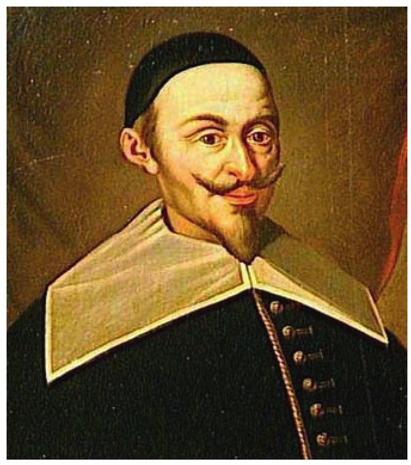
这是一个著名的问题：假设你需要在一个天平上称出1千克到40千克的任意整数重量。如果砝码只能放在天平的一端，至少需要多少个砝码？如果在天平的两端放置砝码，又需要多少个砝码？
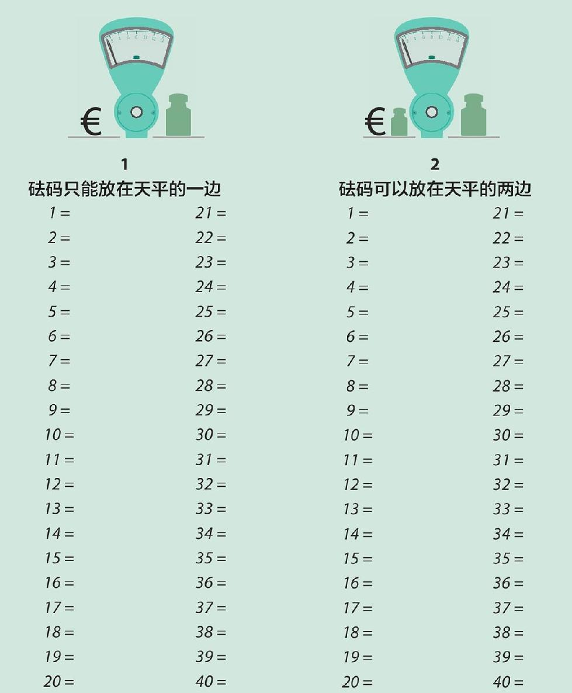
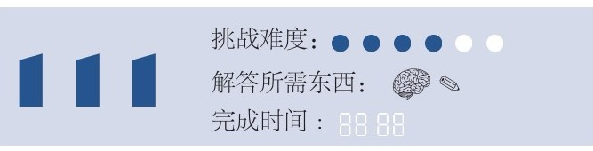
测量3个砝码的重量
你有三个形状完全相同的盒子，里面分别装有重量不同的砝码。在只能使用一个天平的情况下，你需要对三个盒子进行多少次的测量，才能分清楚哪个最轻、哪个最重呢？
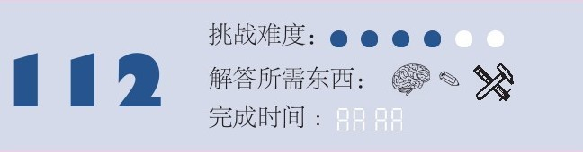
测量21个砝码的重量
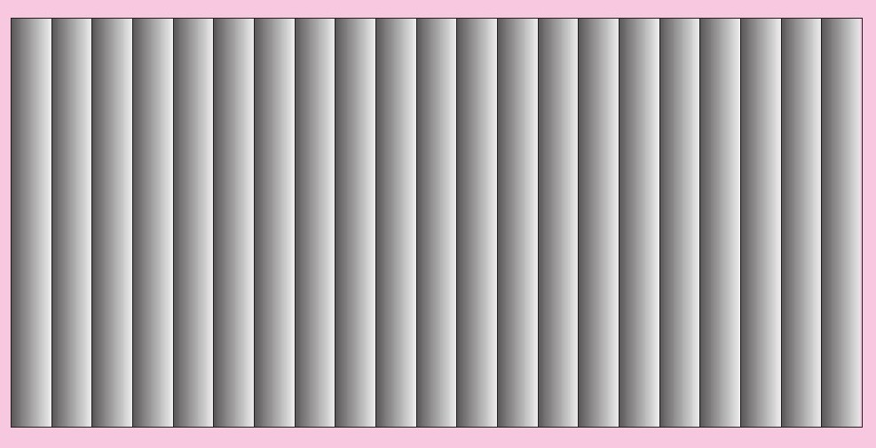
你有21根形状完全一样的棍子，其中一根棍子的重量稍重于其他的棍子。在只有一个天平的情况下，你需要进行多少次测量才能知道哪根棍子是最重的？
测量八枚金币的重量
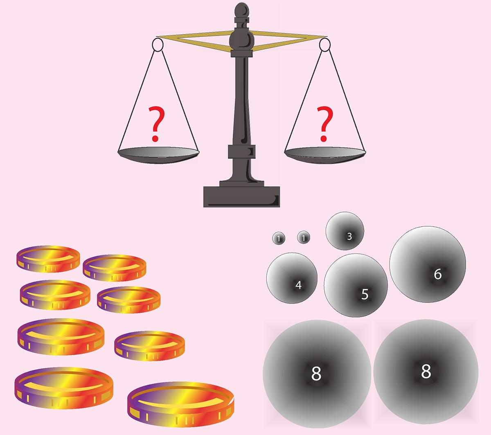
假设你有八枚金币，其中一枚是假币，它的重量要轻于其他的金币，剩下七枚金币的重量是相等的。在不使用砝码的情况下，你至少要在天平上进行多少次测量，才能发现那枚假币？
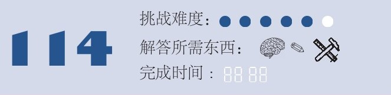
称重分拣
你有一组钢球，每个钢球的单位半径如图所示。你能将这些钢球分在两个组里，并让每组钢球的总重量完全相等吗？
保持平衡
你能找到多少种方法摆放五个砝码，使你在拿走两个圆柱体支座之后，天平依然保持平衡状态？
记住，砝码距离支点的距离越远，它所产生的力就越大。因此，位于刻度2处的一个砝码产生的力是它位于刻度1时的两倍。
如果你随意地在天平上放置砝码，这些砝码处于平衡状态的概率是多少呢？
你能找到多少种方法摆放六个砝码，使得拿走两个圆柱体支座之后，天平依然保持平衡？
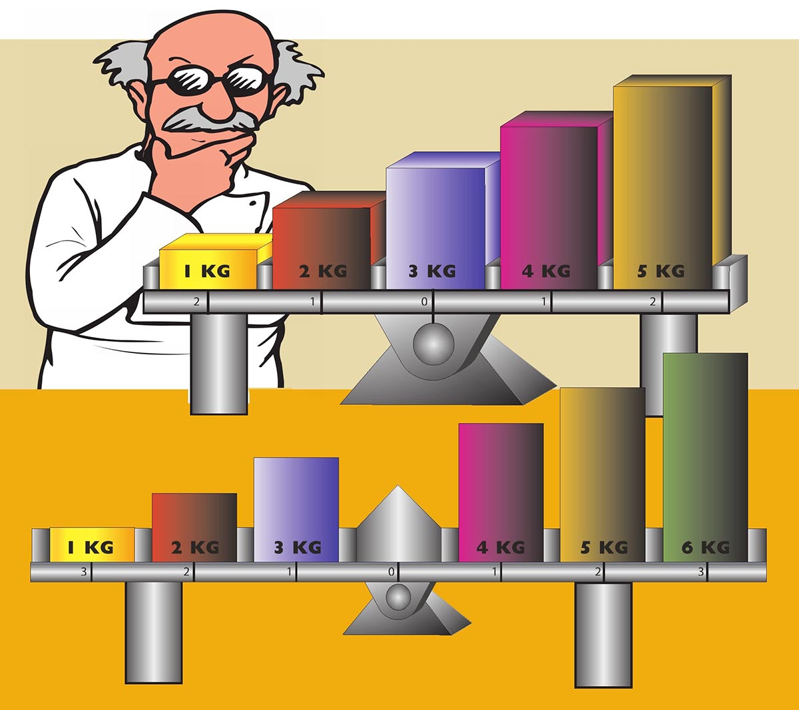
正多边形镶嵌——1618年
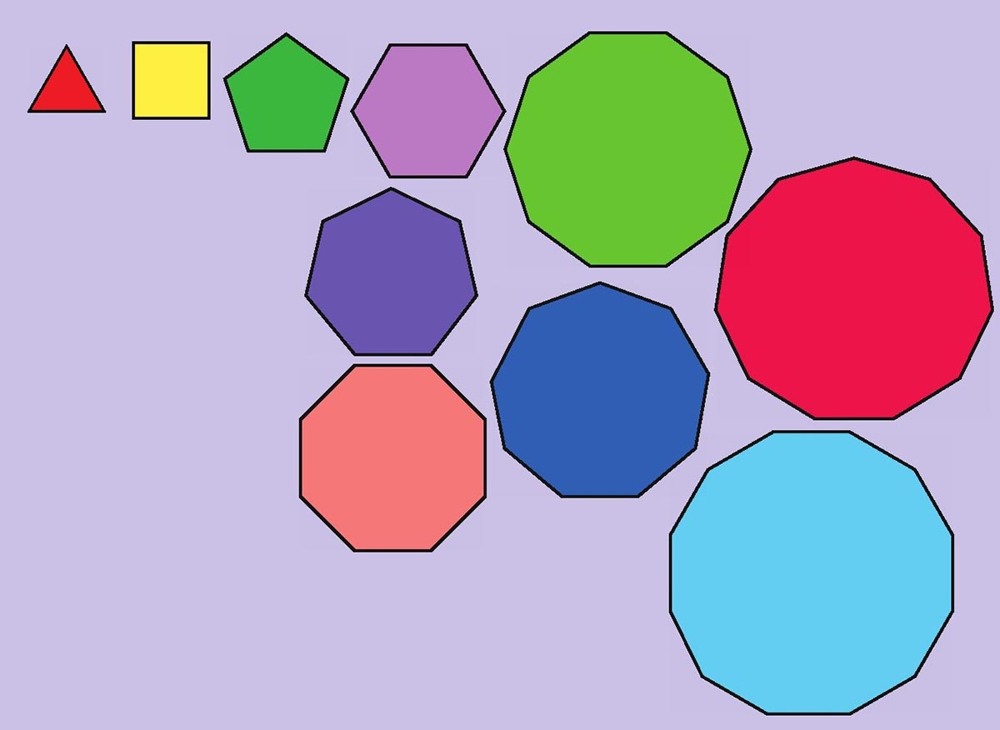
所谓的“镶嵌”，从一般意义上来说，就是将几何形状以马赛克的方式铺满整个平面。罗马时代的马赛克就被称为“镶嵌”。今天，“镶嵌”一词被用来描述可以覆盖一个面（这种覆盖是指技术上完全填充，不留任何死角）的任何形状的图案。平面镶嵌是三维多面体的一个基本元素。
一个正多边形镶嵌是由多个正多边形构成的，这与填充一个平面的方式是完全一致的。
存在无数个正多边形——从等边三角形开始，接着就是正方形、五边形、六边形、七边形、八边形等，一直到圆形，这些图形都被视为正多边形，其边数可以是无限多的。
几何学最令人震惊的一个违反直觉的事实就是，只存在着少量的正多边形镶嵌。
惊人的是，正多边形唯一的边对边的镶嵌方式只适用于三种正多边形，包括等边三角形、正方形和正六边形。
在为数不多的正多边形镶嵌背后隐藏着一个具有美感的几何学逻辑。因为它们的基本元素都是正多边形，其中一个必须满足的条件就是：这种多边形的每一个交点（顶点）所形成的角度之和都必须是360°。在一个正三角形（等边三角形）里，每个内角为60°，因此，六个这样的三角形必然能够在一个顶点汇聚。在一个正方形里，每个内角是90°，因此四个正方形也能够在一个顶点汇聚。在一个正六边形里，每个内角是120°，因此，三个这样的六边形能够在一个顶点汇聚。
除此之外，任何其他正多边形无论有多少条边，都无法在一个平面以正多边形的形式进行镶嵌——只存在三种正多边形的镶嵌方法。
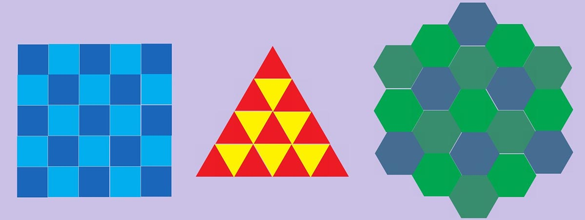
半正则镶嵌——1618年
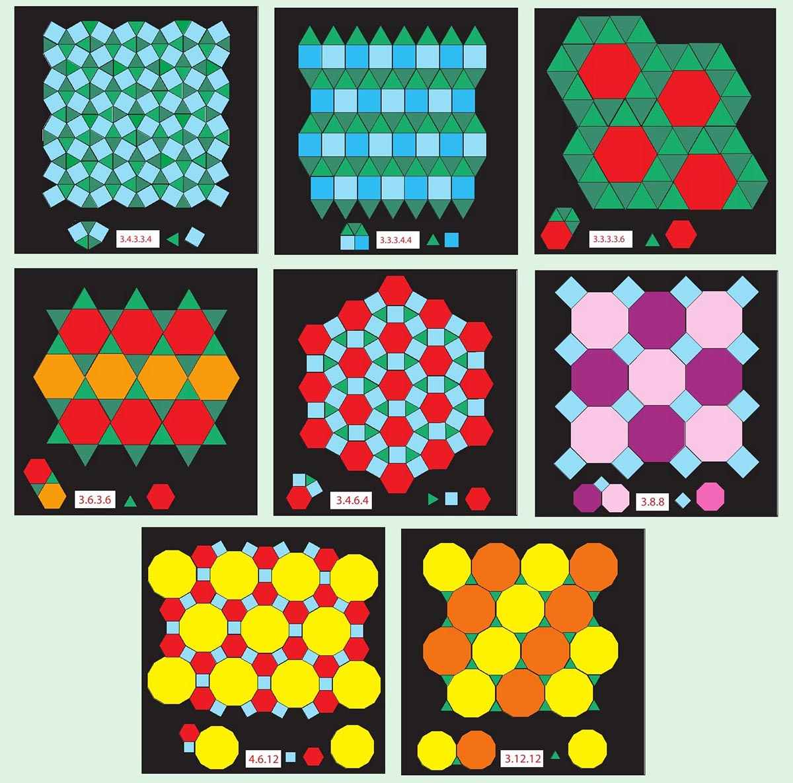
一共有八种半正则镶嵌的方法。如图所示，它们是由五种不同的正多边形组成的：三角形、正方形、六边形、八边形与十二边形。与正多边形镶嵌类似，这也是一个小得惊人的数字。约翰尼斯·开普勒与他的后继者们都在马赛克镶嵌问题上进行了先驱性的研究。它不仅是消遣数学方面的内容，也是结晶学、编码理论和元胞结构等方面的重要研究工具。
半正则镶嵌是指使用两种或两种以上的正多边形来镶嵌，并且在每个顶点周围都有相同的正多边形以相同的方式进行排列——用数学语言可以阐述为，每一个顶点都与另一个顶点全等。
这样的信息可以用施莱弗利符号轻而易举地表达出来。比如，｛3，12，12｝就是指每一个顶点上，按顺时针方向，连接着一个三角形与两个十二边形。
我们不得不在一个顶点上，找寻一种能够填满360°的正多边形的组合。每个角度的组合都符合这个条件的，就被称为“顶点图形”。这是创造任何形式的正多边形镶嵌的一个基本条件。
镶嵌与施莱弗利符号
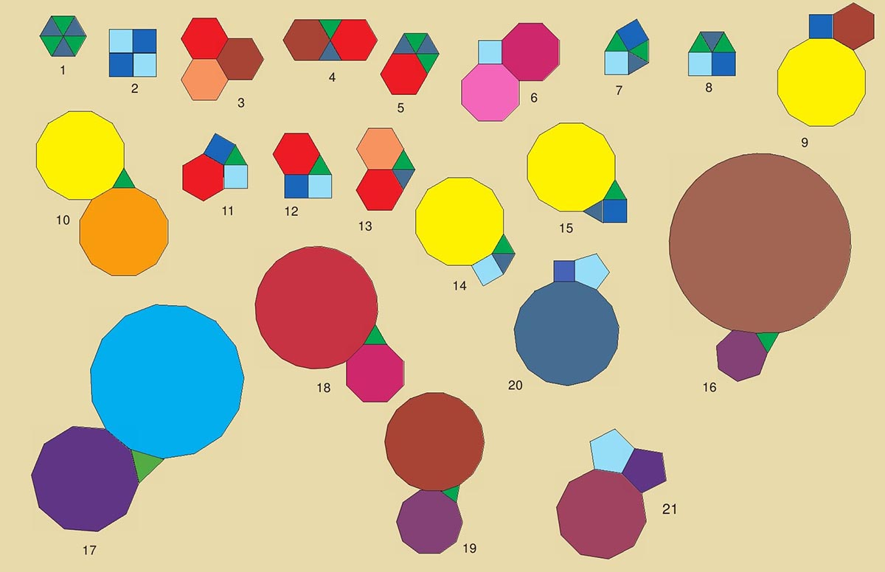
约翰尼斯·开普勒以他在天文学方面的成就闻名于世，但他同时对几何镶嵌和多面体研究也有着极大的兴趣。在他1619年出版的《世界的和谐》一书中，记载了一系列关于正多边形和星状多边形瓷砖形状的内容。
“对外部世界研究的主要目的在于发现理性的秩序与和谐，这一切都是上帝创造的，并通过数学的语言向我们透露出来。”开普勒在书中这样写道。
如果我们将一致性的约束条件——每个顶点都必须等于其他顶点（在正多边形镶嵌中）省略掉的话，我们就可以创造出额外的镶嵌组合。要想做到这点，也需要满足一个基本要求：每个顶点上连接的正多边形都必须形成一个完整的顶点图形，即它们每个内角之和都必须等于360°。
那么我们能够找到多少个完整的顶点图形呢？
一个系统的程序只会做出21个不同的完整顶点图形或顶点图像（如图所示），这些图形都可以用施莱弗利符号去表达。考虑到正多边形有无穷多个，这个数字实在是少得让人震惊。
对于每一个可能形成的镶嵌来说，都存在着一些基本的要求，但只满足这些基本的要求是不够的。
只有一些能够形成完整顶点图形的组合，才能扩展成镶嵌图形。图1、图2和图3中的顶点图形构成了三种正多边形镶嵌；图4至图11中的顶点图形则构成八种半正则镶嵌。两个或三个顶点图形的不同组合，至少会形成十四种非正则镶嵌图。拥有三个以上顶点图形的正多边形镶嵌，其数量是无限的。
顶点图片
上面的多边形拥有二十一个顶点图形，以施莱弗利符号表达如下：
1-3. 3.3.3.3.3
2-4. 4.4.4
3-6. 6.6
4-3. 6.3.6
5-3. 3.3.3.6
6-4. 8.8
7-3. 4.3.3.4
8-3. 3.3.4.4
9-4. 6.12
10-3. 12.12
11-3. 4.6.4
12-3. 4.4.6
13-3. 3.6.6
14-3. 3.4.12
15-3. 4.3.12
16-3. 7.42
17-3. 9.18
18-3. 8.24
19-3. 10.15
20-4. 5.20
21-5. 5.10
阿基米德多面体——半正则多面体
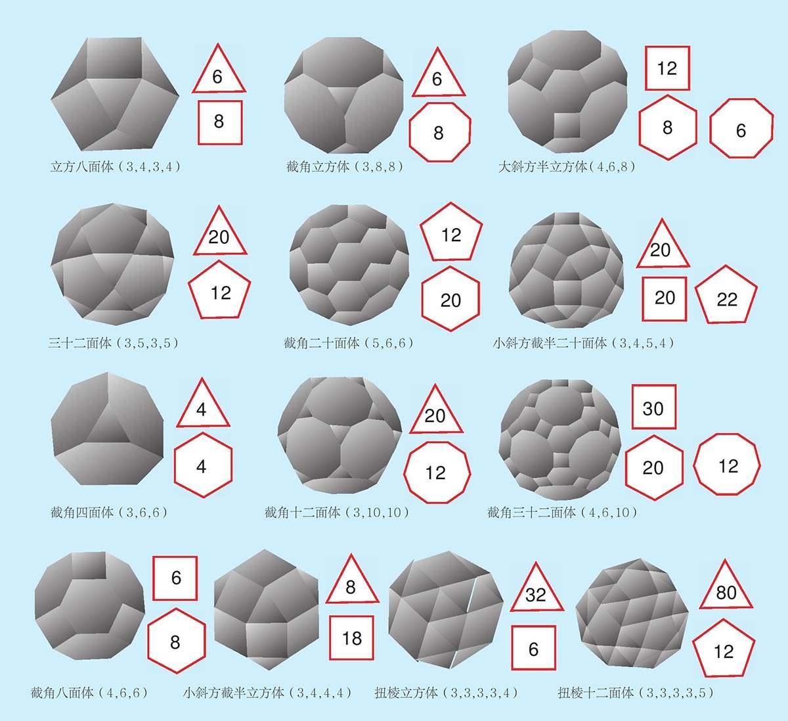
凸面半正则多面体，或者说阿基米德多面体，是由有着相同顶点的不同正多边形组成的。
一共有13个不同的半正则多面体。阿基米德最早对这些立体进行了描述。文艺复兴时期，这方面的知识重新被当时的数学家发现，并由开普勒在1619年构建了一个完整的体系。直到现在，在游戏或谜题领域，仍然存在着许多未被探索的可能性。比如对截角四面体（3，6，6）的记号法就意味着每一个顶点都包含着一个三角形、两个六边形，并且是以循环次序来排列的。在所有的立方体里，扭棱立方体与扭棱十二面体都是以两种镜像或是对映体的方式展现出来的。
卡瓦列里原理——1630年
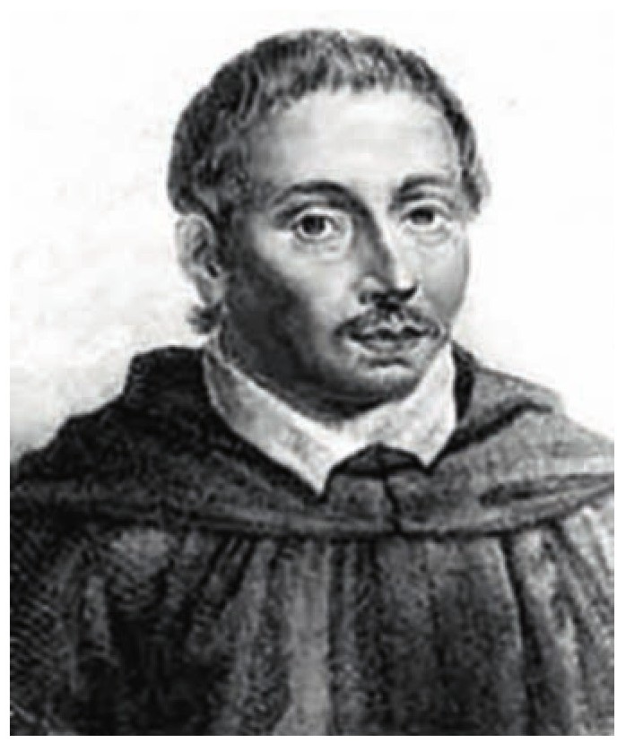
博纳文图拉·弗朗切斯科·卡瓦列里（1598—1647）是一位意大利数学家、微积分学先驱，他以对光学与运动问题的研究闻名于世，他还将对数理论引入了意大利。
几何学中的卡瓦列里原理在某种程度上是积分学的先声。
卡瓦列里原理确立了这样的事实：无论一个棱锥底面的形状如何，它的体积都等于（1/3）×底面积×高。
圆锥体与角锥体的体积
三个圆锥体、三个角锥体与左侧柱体都有着相同的底面积与高度，用水填满锥体。然后将水从圆锥体里倒入圆柱体，从角锥体倒入棱柱体。
圆柱与棱柱体能装入多少水呢？
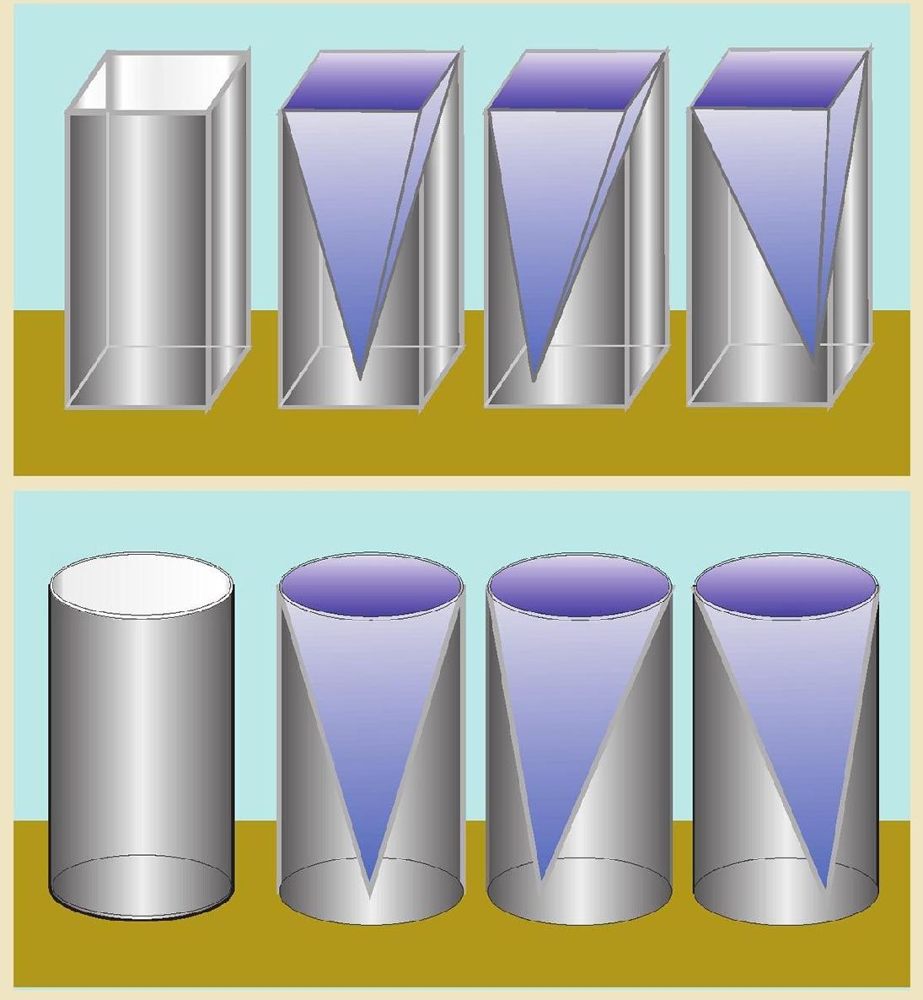
笛沙格定理——1641年
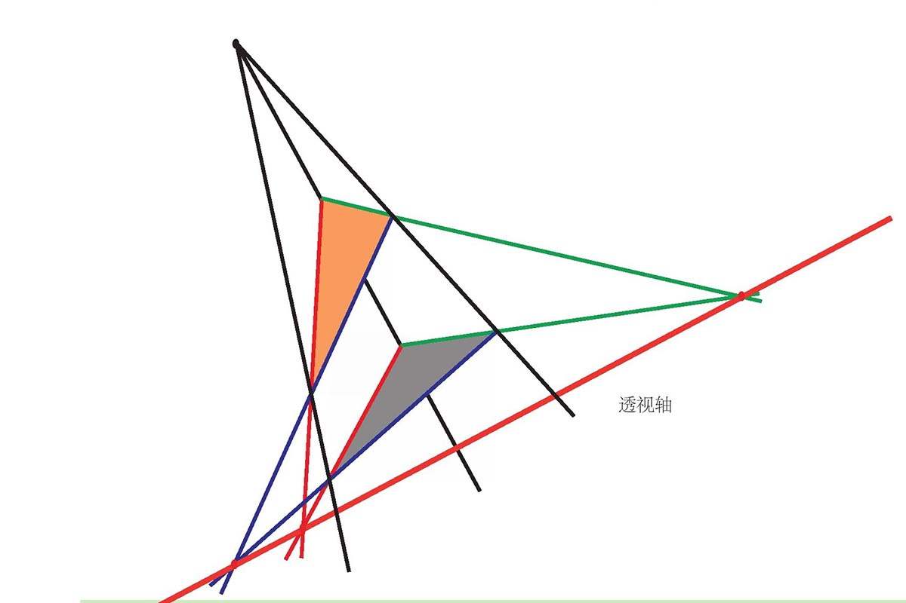
1641年，吉拉德·笛沙格，这位法国数学家（1591—1661）出版了一本书，这本书有一个充满美感与神秘色彩的书名——《影子游戏》。
书的主题是透视与投影之间的关系。今天，我们都知道这是简单却令人惊讶的笛沙格定理：三角形各边的延长线与其投影各边的延长线的交点位于一条直线上（当你去验证它的时候，会发现这简直就是一个奇迹）。
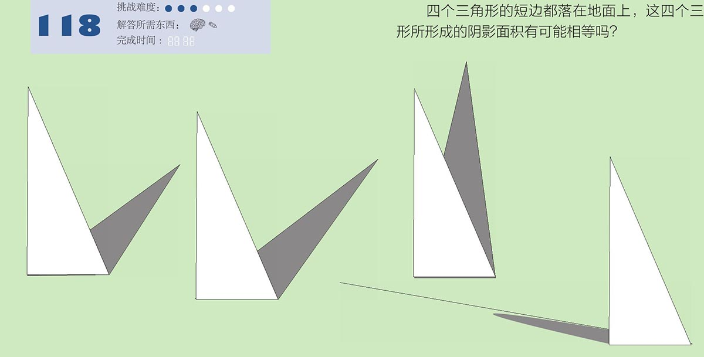
四个三角形的短边都落在地面上，这四个三角形所形成的阴影面积有可能相等吗？
布莱兹·帕斯卡（1623—1662）
布莱兹·帕斯卡，法国数学家、物理学家、发明家、作家和天主教哲学家。
帕斯卡的父亲当时是鲁昂地区的一位收税员，他投入了极大的精力培养自己的儿子。帕斯卡早年的研究工作都专注于自然科学与应用科学上，并在液体静力学研究方面做出了重要的贡献。除此之外，他还对埃万杰斯利塔·托里拆利（Evangelista Torricelli）的研究成果进行了总结，进一步定义了压强与真空的概念。1642年，当时还是一位少年的帕斯卡，为了帮助父亲改进工作，已经开始在计算机方面做出一些开创性的工作。最后，他终于发明了机械计算器。他一共制造了20个这样的机器（被称为加法器）。帕斯卡的健康状况一直不是很好，特别是在他成人之后，身体每况愈下。在过了39岁生日后两个月，他离开了人世。
帕斯卡三角形
数学领域最具美感与最实用的一种数字图形就是著名的帕斯卡三角形。右图显示了前面十排的情况。你能发现它的构造模式，并且继续往下添加多排数字吗？
数学图形的发明可以追溯到古代的中国，但正是布莱兹·帕斯卡发现了其中的模式及其应用，从而使帕斯卡三角形成为当今数学诸多领域最重要的研究工具之一。帕斯卡三角形中的数字显示了从0排开始到达某个点的几种可能的路径。
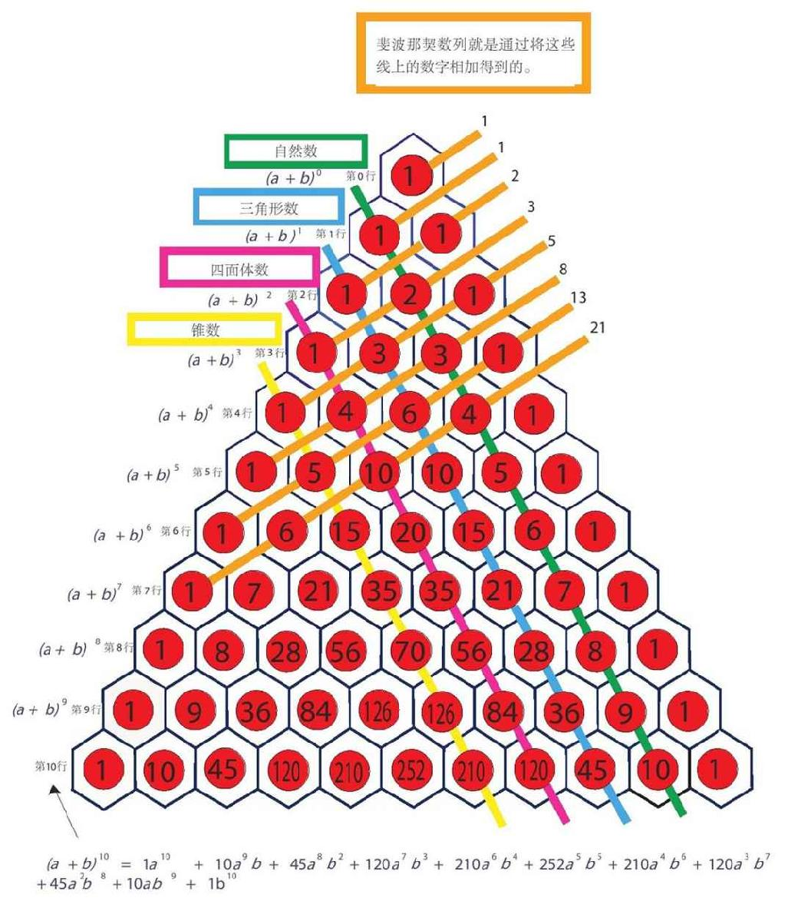
鲁珀特王子问题——1650年
作为皇家学院的创始成员，莱茵地区的鲁珀特王子（1619—1682）提出了一个100多年来都无人能解的问题，这个问题现在被称为鲁珀特王子问题。问题是这样的：能否在一个立方体中穿一个洞，使与之体积相等或更大的立方体从中穿过呢？
约翰·沃利斯（John Wallis）首次对一个立方体穿过另一个立方体的数学问题进行了认真的研究。1816年，沃利斯死后，荷兰数学家彼得·纽兰（Pieter Nieuwland，1764—1794）在其出版的书中，提出了解答方法——找到能够通过单位棱长立方体的最大立方体。
纽兰通过寻找能够穿过单位棱长立方体的最大立方体回答了这个问题。若是我们从一个顶点去俯视的话，那么一个单位棱长立方体就会有一个正六边形的轮廓，边长的为3/2。
穿过一个立方体的最大正方形要有一个能够内接这个正六边形的面，这个正方形的边长大约是：
32/4=1. 0606601…….
因此我们得出了有趣的结论：穿过另一个立方体的立方体，比被穿过的那个立方体还要大一些。
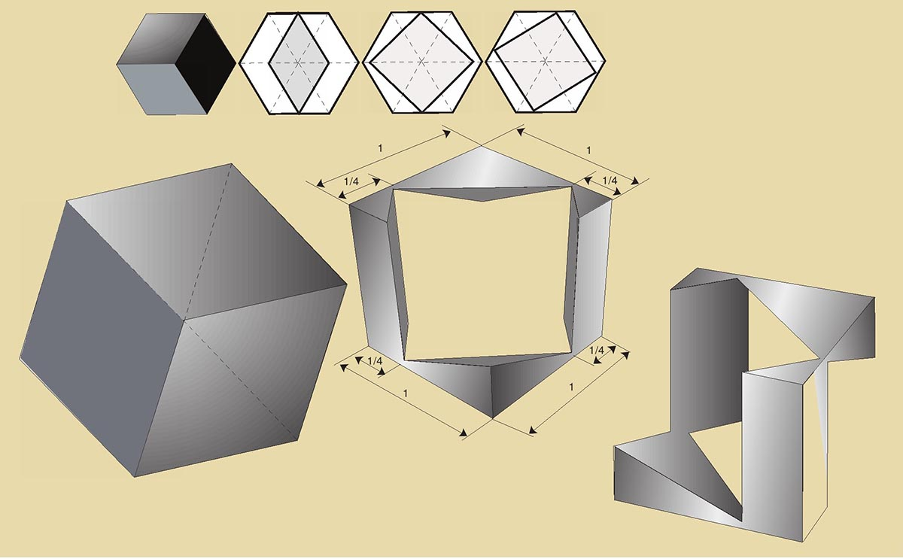
组合学——让计算变得更加容易
从古代开始，组合学问题就一直吸引着数学家关注的目光。公元前12世纪的中国古书《易经》中就提到过幻方。帕斯卡三角形（当然那时还不叫这个名字）也出现在13世纪的波斯王国。
在西方，组合学始于布莱兹·帕斯卡与皮埃尔·德·费马等人对概率论的研究，之后戈特弗里德·威廉·莱布尼茨进一步深化了这方面的研究。莱昂哈德·欧拉是18世纪推动组合学发展的主要人物。当欧拉解答了哥尼斯堡桥这个问题后，他就成了图论的创始人。很多组合学方面的问题在19世纪都是以消遣问题的方式呈现出来的（比如八皇后问题与科克曼女生问题）。
最早专门论述组合学问题的著作是珀西·亚历山大·麦克马洪1915年出版的《组合分析》一书。
组合学是现代数学的一个分支，研究的是数字与物体组合方式的问题，它的名字也由此而来。
概率问题、电脑理论以及其他很多日常生活中的问题，都需要运用到组合学的定理，特别是在组合与排列方面。在一个系统内可能进行的数字排列方式一开始看上去很少，但是随着元素的不断增多，这种可能性会迅速提高，最终大到根本无法计算。
下面有关组合学的几个基本的实例本身都是非常简单的：
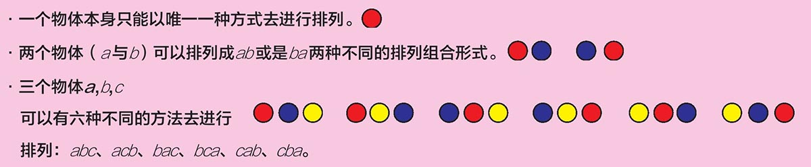
——韦纳·冯·布劳恩
一般而言，计算n个物体有多少种排列组合情况，我们只需要将一个物体接着一个物体处理就可以了。第一个物体可以出现在n个可能的位置上，而第二个物体则只能出现在n-1个可能的位置上（因为它无法占据第一个物体已经占据的位置）。对于n（n-1）种组合中的每一个物体而言，第三个物体只能出现在n-2个可能的位置上，依此类推。
一般来说，n个物体可能出现的排列组合方式是n-1个物体排列组合方式的n倍。比如说，4个物体的排列组合方式是3个物体的4倍。换言之，4个物体的排列组合方式多达24种。也就是说，我们可以用120种不同的方法排列5个物体，或用720种不同的方法去排列6个不同的物体。
这些数字就被称为阶乘，用n！来表示。比如6！表示6的阶乘，结果等于720。
因此，计算n个物体所有可能的排列方式可以用下面的公式表示：
p=n！=n×（n-1）×（n-2）×（n-3）×……3×2×1
这个数值会非常迅速地变大。对于n个物体来说，若是不需要处理与排序相关的问题，而只需要从n个物体中取出n个组成一组，求这n个物体能有多少种组合方式，那又该怎么办呢？
这个问题要更加棘手一些。假设你从5个不同元素中拿出3个（可以是颜色、文字或其他东西）。那么，求有多少种拿法就可以这样计算：
Pk=n！/（n-k）！=5！/（5-3）=120/2=60
有时，我们并不关注物体的顺序（排列情况），而只需要关注某个具体样本中的组合问题（可选择的数量）。所谓一个组合，就是从某个特定小组里选择物体，同时不需要考虑物体的排列顺序。
因此，计算组合方式总数的一般公式是：
C=n！/k！（n-k）！=5！/3！（5-3）！=10
在我们上面提到的这个具体例子里，一共可以对这些元素进行十组的组合（注意，不需要在意每个小组内各个元素的排列顺序）。
上面，我们已经对所有不同的物体进行了处理。有时，这些物体中可能涉及多种同一类型的物体，我们可以按类将之划分，比如，某一类型的物体为a个，另一种类型的物体有b个，依次此类推。
在这种情况下，组合的数量就是：
Pa, b，c=n！/a！b！c！
大多数与游戏或谜题相关的概率，可以通过计算所有的可能性与满足某种特性的结果数得出来。这两个数字的比值就是所求的概率。排列与组合的公式有助于缩短计算的时间，使其变得更加容易。
求n个元素中k个元素有多少种组合方式，可以通过著名的帕斯卡三角形求得。
维维亚尼定理——1660年
维维亚尼定理是以温琴佐·维维亚尼（Vincenzo Vivian）的名字命名的。这一定理是这样阐述的：等边三角形内任意一点与三边的垂直距离之和等于三角形的高。
温琴佐·维维亚尼（1622—1703）是一位意大利数学家和科学家。他是托里拆利的学生。1639年，他17岁，那时候他就已经成为伽利略·加利莱伊的助手了。
1660年，维维亚尼与乔瓦尼·阿方索·博雷利（Giovanni Alfonso Borelli）合作进行了一次实验，研究声音的传播速度。他们分别记下了看到远处加农炮发出光亮的时间与听到炮声的时间，然后计算出了声音每秒传播的速度值为350米/秒。
温琴佐·维维亚尼
1661年，他就钟摆的转动进行实验研究，这要比傅科那次著名的演示还早190年。
断掉的木棍
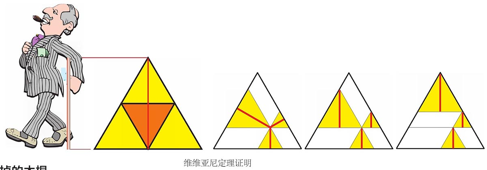
如果一根木棍随机地断裂成三段，那么这三段木头组成一个三角形的概率有多大呢？
这个问题的背后就隐藏着等边三角形的一个明显的属性，这可以通过维维亚尼定理去表达。在一个等边三角形内的任意一个点到三边的距离加起来都等于这个三角形的高度。2005年，川崎（Kawasake）就利用转动方式证明了如图所示的这个定理。等边三角形有助于解决这个经典的概率问题。这个等边三角形的高就等于这根木棍的长度。
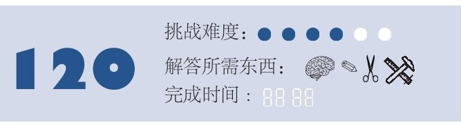
地球里的一个洞——餐巾环问题
玛丽莲·沃斯·莎凡特（Marilyn Vos savant）以她在《展示杂志》（Parade magazine）“问玛丽莲”专栏里提出的蒙提·霍尔问题闻名于世。她还提出了另一个具有挑战性的问题。这个问题就是在某个特定的球体内，挖掘一个6英寸长的洞。你能用一个直径6英寸的球体做到吗？
17世纪的日本数学家关孝和就已经对这个问题进行了早期研究。这个洞是一个空心的圆柱体，高度有6英寸。
我们已经得出了这样的结论：想通过一个直径为6英寸的球体去挖掘出一个6英寸长的洞是不可能做到的。
要想在一个面积更大的球体里挖掘一个6英寸长的洞，你必须要有一个很厚的挖掘工具，将球体上下两边的盖子以及中心大部分移走，只留下一个曲形环，就会形成如图所示的高度为6英寸的餐巾环。
这个餐巾环的体积是多少呢？换句话说，这个球体剩下的那部分体积是多少呢？一个如地球这么大的球体的曲形环，它的体积又是多少呢？附图也许会给出一些视觉提示。
有趣的结果是，一个带环的体积并不取决于其半径，而取决于其高度。因为当一个球体的半径变小时，那么圆柱体的直径必然要变小，才能保持高度一致。随着体积的增加，带环会变厚。但是，这会使带环的周长变得更短，因此体积也会随之变小。两者的效果会相互抵消。在最为极端的情况下，假设一个体积最小的球体，那么这个球体的直径将会与洞的高度相等。在这种情况下，这个带环的体积就是整个球体的体积。
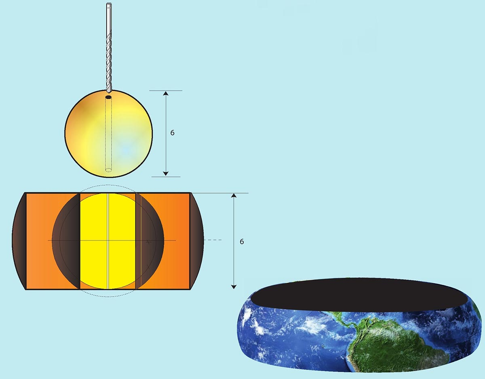
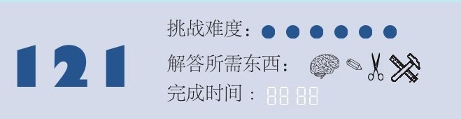
圆弦环
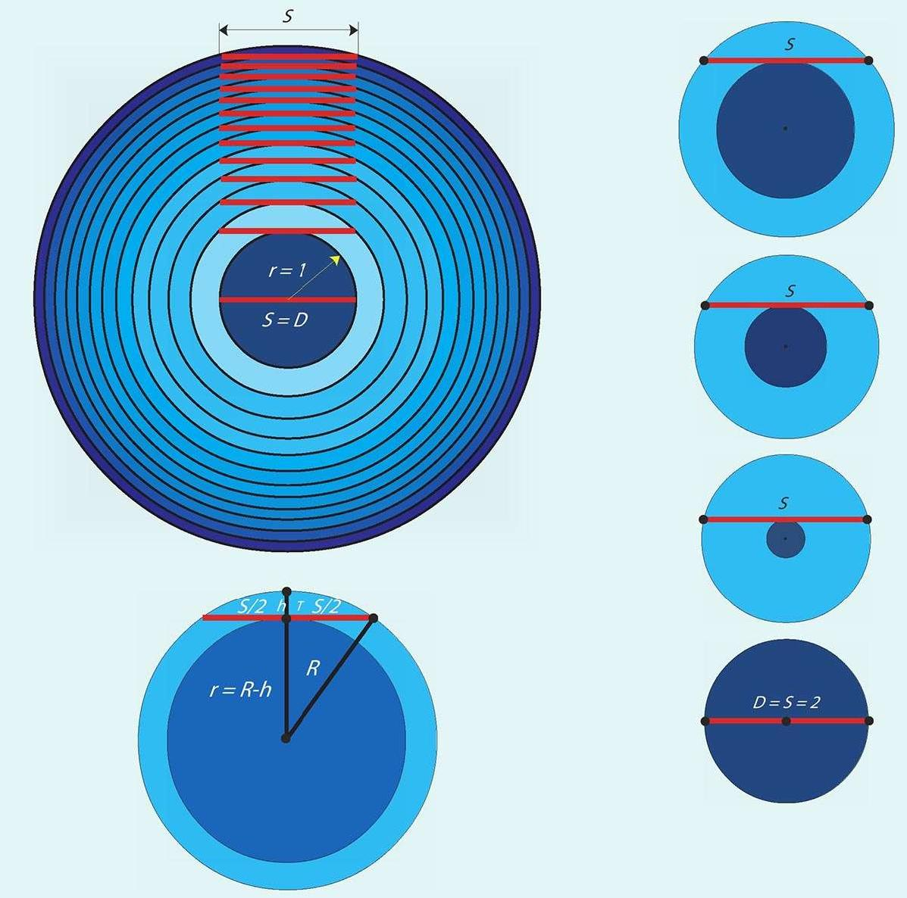
大圆的弦S与较小圆是正切关系，相交于T点。问题是要算出中间那个半径为1的圆形周围的12个圆环以及右边3个浅蓝色圆环的面积。
你认为自己有足够的信息去计算这些圆环的面积吗？提示：毕达哥拉斯定理可以帮到你。
二进制与电脑语言
最简单的数制就是基于两个连续数字的二进制。
古代的一些原始部落是以二进制方式计算的，中国古代的数学家已经对二进制有所了解。但二进制却是在德国数学家戈特弗里德·威廉·莱布尼茨的研究下得到全面发展的。莱布尼茨在他的著作《二进制数入门》一书里对二进制进行了具体描述。
莱布尼茨对二进制非常着迷，对他来说，这个数制象征着一个形而上学的真理：那就是0与1这两个数字足以描述任何数字。根据莱布尼茨的说法，整个宇宙都可以通过二进制数的不同排列组合去完成从无到有的过程。在莱布尼茨之前，还从未有任何一位数学家意识到，只需要0与1这两个数就可以创造出一个运作良好的按位计数系统。
1666年，莱布尼茨认为，可以通过他的二进制（0-假，1-真）方法去创造出一个完全符合逻辑的数学方法。他的这一思想被同时代的其他数学家忽略。于是，莱布尼茨就将这个想法放在了一边。十年之后，他读到了中国的古书《易经》，就充满热情地重新提出了之前的观点。
宇宙是由相互联系的各种物质（1）与非物质（0）的相互吸引组成的。正是这样的二进制排列才为宇宙万物的存在提供了基础。我们周遭存在着许多和电脑运转方式相同的事物，它们以对立为基础，非1即0——不是这个，就一定是另一个。
但是，莱布尼茨提出的二进制当时也不过是一个构思而已，直到几百年之后，电脑的出现才改变了整个世界。
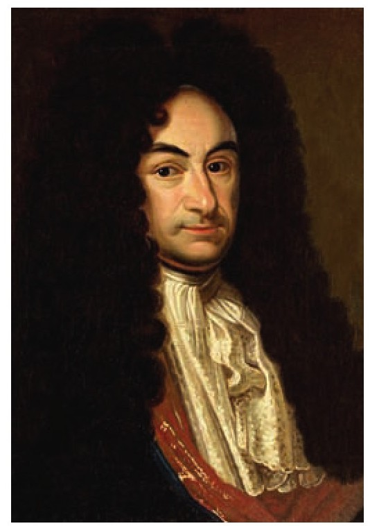
戈特弗里德·威廉·莱布尼茨
——凯丽·雷德肖
二进制算盘——1680年
二进制算盘运算的原理与古典的算盘没有什么差别。数字0与1被写在一排的时候，每个位置上的0与1都代表着不同的值。如图所示，用二进制表示的前16个数字都已经显示出来了。这些数字每加一个1时，它之前所占的位置就会空出来，数字1就会占据左边的空位。
下面给出了四个十进制数，你能够将这些数字转化成二进制数吗？
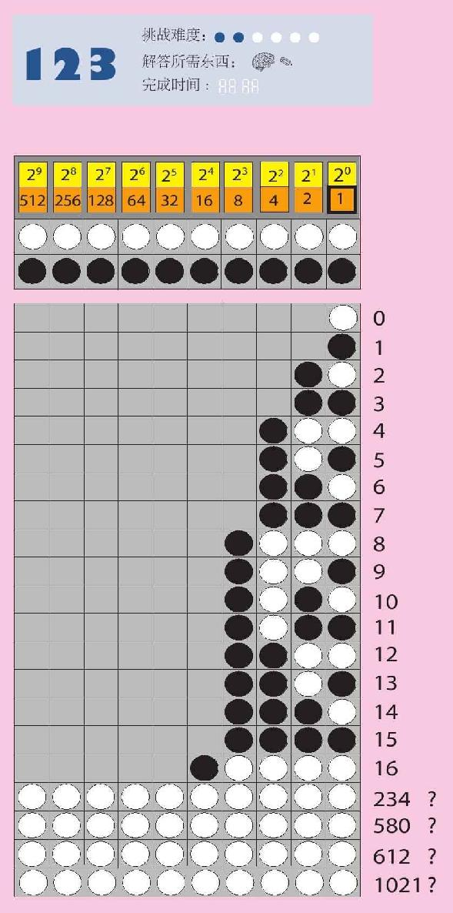
吻接球面——1694年
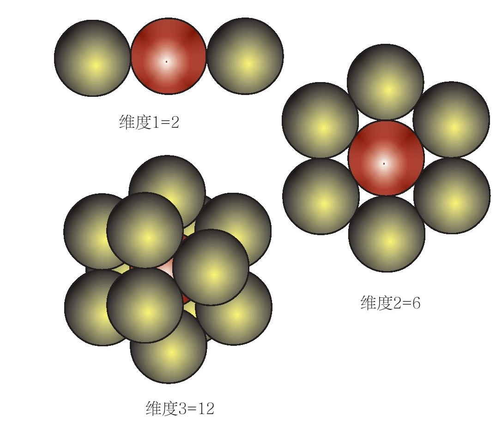
“吻接球面”的问题是1694年戴维·格雷戈里与艾萨克·牛顿在那次著名的对话之后被提出来的。
给定一个球，一共能有多少个相同大小的球与之同时接触呢？
在一维空间里，吻接球面的数量只有2个，在二维空间里，吻接球面的数量是6个。
牛顿认为三维空间中会有12个吻接球面，而格雷戈里则认为有13个吻接球面。
在接下来长达250多年的时间里，这个问题始终都无法得到解答。
1953年，库尔特·舒特与巴特尔·L.范·德·瓦尔登找到了最终答案。有趣的是，我们今天回过头来看就会发现，这个问题可以在一个非常高的维度上得到解答，比如在二十四维空间里，会产生196560个吻接球面。你知道在格雷戈里与牛顿之间，谁的答案是正确的吗？
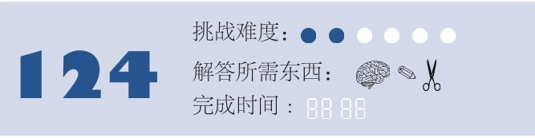
最密堆积与立方八面体
围绕一个单独的球体，你最多能够堆积多少个与之体积相等的球体并使其相接触呢？这个数字就被数学家们称为“吻接数”。要是我们按照这一原理去堆积第二层或更多的层，那么我们就能在前面三层范围内做到最密堆积，如图所示。最密堆积会形成立方八面体，这是属于阿基米德多面体的一个类型。你能计算出前面三层堆积着多少个球体吗？
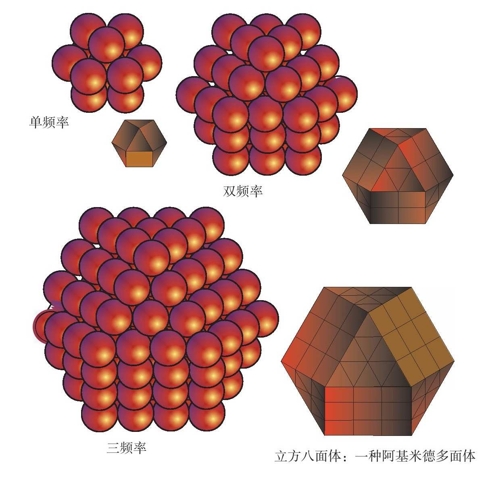
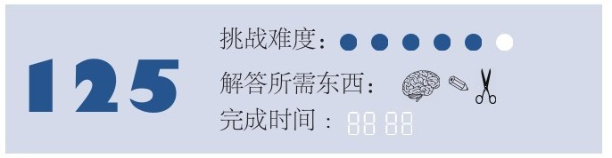
最速降线与等时曲线问题
1696年，约翰·伯努利（Johann Bernoulli，1667—1748）向全世界的数学家提出自己已解决了最速降线的问题。最速降线指物体在两个点之间最快降落的路径。也就是说，当一个球以零速度开始滚动，在时刻受到地心引力作用并且假设没有任何外在摩擦力时，最快降落的路径。
伯努利并不是第一个解答最速降线这个问题的人。伽利略1638年就在倾斜的平面上进行了类似的实验，但是他却得出了错误的结论，认为最速降线应该是一段凹形的圆弧。
在经过莱布尼茨、牛顿与约翰·伯努利等人的辛勤研究之后，伯努利的哥哥雅各布找到了最终的答案。你能找到吗？
1659年，克里斯蒂安·惠更斯（Christian Huygens）解答了另一个问题——等时曲线问题。等时降落轨迹或等时曲线，都是指一个球在没有受到任何摩擦力，只受到重力影响的情况下，从高处落到低处所形成的曲线。这个过程与球所放的起点无关。他证明了摆线也是一种等时曲线。他的发现对于设计等时性的摆钟是至关重要的。
等时曲线上的四个球体在不同位置被同时释放，它们将会在同一时间落到最低点。
最速降落——1696年
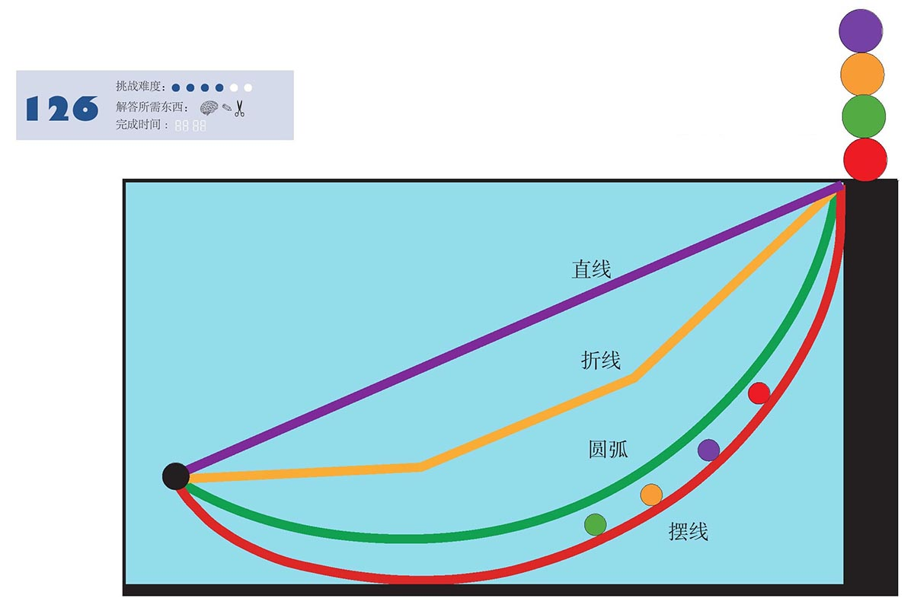
若是按照如下四种不同的路径释放这些球体，你知道哪个球会最先到达斜坡的底部吗？换句话说，最速降线会形成怎样的曲线呢？在重力作用下，一个物体沿着哪条线降落会比其他路径要快一些呢？沿直线降落速度是不是最快呢？
佩格棋——1697年
这种游戏最早可以追溯到1697年路易十四的宫廷，当时，克洛德·奥古斯特·拜赖伊制作了一个苏比斯王子的妻子安妮·德·罗昂-沙博的雕版，在她肖像旁边刻上了这个游戏。从那时起，佩格棋游戏版被大量雕刻出来，表明这种游戏在那个时代是非常流行的。
标准的游戏规则是用棋子将整个棋盘填满，但是中间那个“洞”是不能填的。游戏的目的就是通过有效的走位，将除了中间那个位置之外的其他棋子全部清空。
这种游戏最流行的变体就是在一个33个棋格的棋盘里进行的游戏。如图所示，32个棋格都摆放着棋子，除了最中间的那一格（第17格）。更为简单的佩格棋形式就是使用棋格数量更少的棋盘，然后将中间位置以外的其他棋子都清空。
“走一步”既可以是移动一枚棋子到相邻棋子的位置上将它吃掉，也可以是将棋子挪到旁边的空位。可以沿垂直方向走，也可以沿水平方向走，但不可以斜着走。每走一步必须“跳”一次，连续跳几次也被视为一步。
没有人知道有多少种解法。显然，要想成功至少需要跳31次，但如果将连跳计算在内，那么步数可能就要少于31。
这个问题的世界纪录是18步，这个纪录是由数学家欧内斯特·贝霍尔特在1912年创造的。你需要走多少步才能成功呢？你走多远才会发现无路可走呢？
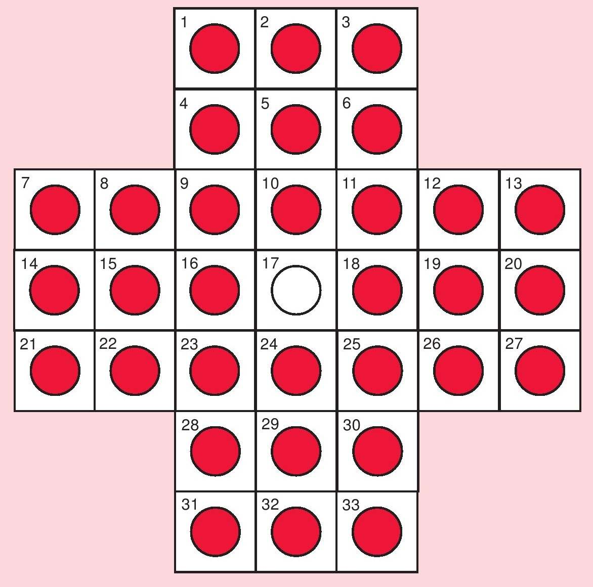
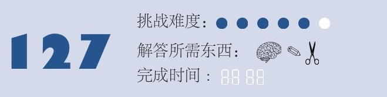
——戈特弗里德·威廉·莱布尼茨，1716年
二进制记忆轮
三比特（比特是二进制数字中的位）、四比特、五比特与六比特等二进制数都可以用相应的开关表示，如图所示。
这些数字代表着二进制系统的前面64个数（包括0）。
24个开关对于同时表达三比特的二进制数来说是必需的，64个开关用来表示四比特的二进制数，160个开关用来表示五比特的二进制数，而六比特的二进制数则需要384个开关。
但是，如图所示的二进制轮子里，同等数量的信息可以被分别压缩为8个、16个、32个以及64个开关，这是非常经济的一种计算方法，可以通过让开关重叠起来去完成。
你能找到一种方法将二进制数分布到二进制轮子上吗？这样，当你顺时针转动轮子时，所有的二进制数都用一套相邻的“开”“关”转换器表示。
虽然代表每个数字的开关都必须是连续的，但是这些数字本身却不能按照连续的顺序分布。
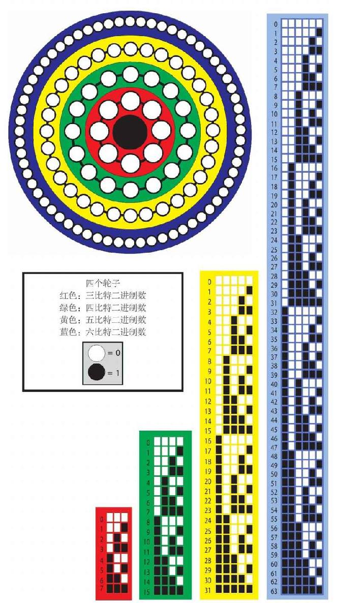
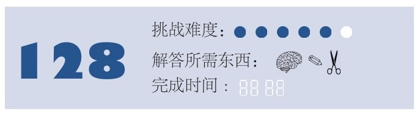
——佚名
绕地球一圈的绳索——1702年
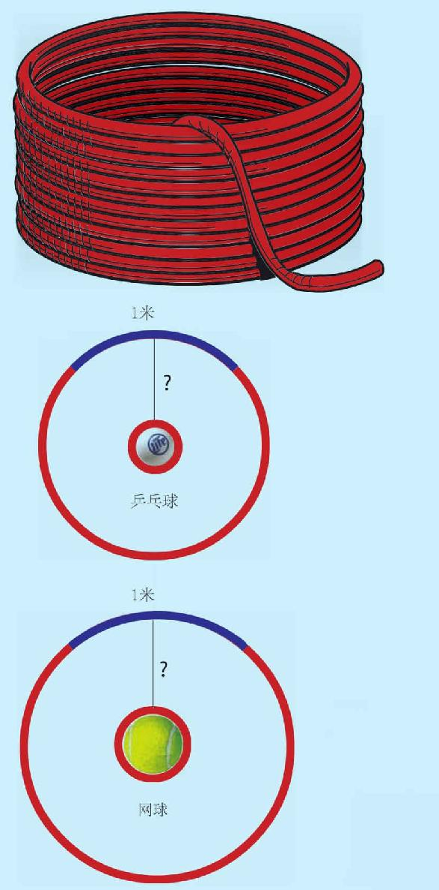
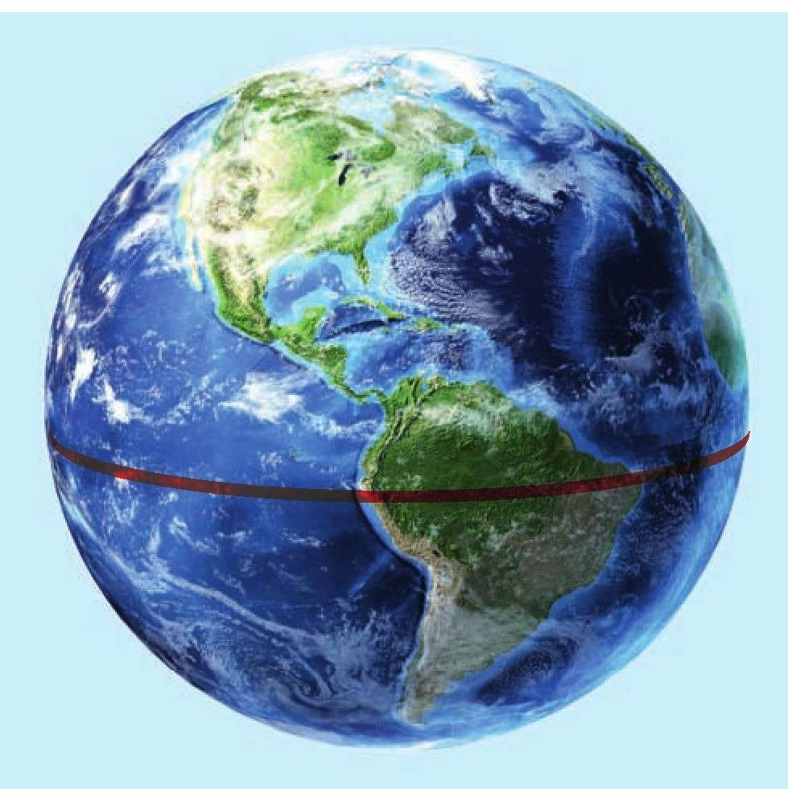
最让人惊叹且违反直觉的悖论之一就是亨利·杜登尼提出的“绕地球一圈的绳索”问题。该问题在1702年威廉·惠斯顿（William Whiston，1667—1752）出版的书中首次被记载。
解答这个问题，我们得假设地球是一个绝对意义上的圆球体，而且赤道的长度刚好是4万千米。
一条沿着赤道放置的绳索形成了一个封闭的圆，紧紧地围绕着地球表面。接着，你可以切开这条绳索，将它的长度加长1米，接着继续绕地球围成一个正圆。
你认为绳索与地球表面之间的距离是多少呢？如果我们不以地球为实验对象，而是对一个乒乓球、网球或其他球体进行相同的实验，又会出现什么结果呢？
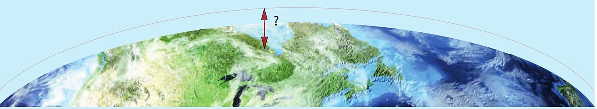
伐里农的平行四边形
假设你随意地画出五个四边形（有着四条边四个角的多边形）。下图左上方第一个四边形的每一边都被二等分，四个中点连在一起就形成了一个平行四边形。平行四边形的每条边都与这个四边形的两条对角线相平行，因此它们是成对地相等且平行的。
你能计算出这个平行四边形与它外部的四边形在面积与参数方面有何关系吗？
你能在剩下的四个四边形中以相同的方式做出一个平行四边形吗？你可以尝试一下。
伐里农定理——1731年
伐里农定理是欧几里得几何学的一个陈述。1731年，皮埃尔·伐里农最早出版了与此相关的著作。这个定理是关于在任意四边形里建构一个特殊平行四边形（伐里农平行四边形）的方法。
任意四边形四条边的中点连在一起可以形成一个平行四边形。如果四边形是一个凸四边形或凹四边形（不交叉的四边形），那么这个平行四边形的面积就是整个四边形面积的一半。
力矩原理在机械学上又被称为伐里农定理。其内容是：对于同一点或同一轴而言，任何力的力矩等于各分力的力矩之和。这是一个非常重要的原理，通常会与传递性原理一起，用来决定作用于某一结构或结构内部的力或力学系统。
派生的多边形——1731年
伐里农的平行四边形是通过连接任意四边形每条边的中点而派生出来的。这个定理同样可以延伸到其他多边形上。
你可以随意地画出一个不规则的多边形，将这个多边形每条边的中点连在一起，就会派生出一个中点多边形。
让人惊讶的是，如果你继续按照这样的方式去做，那么派生出来的多边形就会变得接近正多边形，它们的每条边在长度上也越来越接近。
更让人惊讶的是，同样的多边形按不同比例去分割每条边（右图中不规则六边形各边被三等分），最终派生出来的多边形也是相似的。
莱昂哈德·欧拉（Leonhard Euler，1707—1783）
莱昂哈德·欧拉是一位瑞士数学家，也是历史上最为高产的数学家之一。他在巴塞尔大学学习，成为一名像他父亲那样的牧师，然而对数学的热爱让他改变了学习的方向。欧拉有13个孩子。人们常说他最伟大的数学发现就是在怀里抱着孩子时做出的。
他在数论、微分方程、变分法以及其他领域，都对数学发展做出了巨大的贡献。在数学史上，他出版的专著比任何一位数学家都要多。他于1783年去世后，科学院在接下来50年的时间里，仍在陆续出版他生前尚未出版的著作。
哥尼斯堡七桥——1735年
下面这个问题可以追溯到1735年，那时，德国一座城镇哥尼斯堡有七座桥。这个问题很简单（虽然解答这个问题并不是那么简单）：在散步的时候，有没有可能每座桥只经过一次，然后返回家呢？
据说，住在这座镇上的人们已经试过了，但始终都没有找到解答这个问题的方法。欧拉在1735年解答了这个问题，并且为数学一个最重要的分支——图论打下了基础。

欧拉将图形简化为看上去非常简单的点和线，从而以独创的抽象方式解决了这个问题。欧拉的方法就是只用点与线去进行解答。通过这样的方式，他创造出了如图所示的数学结构，我们今天称之为“欧拉图”。
接下来，这个问题就变成了：一个由线与点构成的图形，是否有可能一笔画出来，使你的笔中途不离开纸并且每一条线都不重复呢？
欧拉证明，想要一次走完全程，那么最多只能有两个奇点（连接到一点的线有奇数条，则为奇点）；如果需要返回起点，那么起点必须是偶点。明白了这一点，推理过程就容易理解了：除了起点和终点外，整个旅程只会经过每个汇合点一次。这样我们就将哥尼斯堡七桥问题简化成了一个有四个奇点的线网结构，并可以求解了。
结论是无解。欧拉提出的这个问题其实属于数学的拓扑学范畴——专门用于处理连续变形图形所具有的属性。如果其中一个图形能够扭曲成另一个图形，那么这两个图形在拓扑学上就是等价的。如果单条曲线能够穿过一个网络，那么任何在拓扑学上等价的网络也会被穿过。这个开始看上去简单的趣味数学问题，最终衍生出了当代数学的一个重要分支，也算很不错啦！
欧拉的多边形分割问题——1751年
三角形划分是将一个平面多边形划分为多个三角形。
其中一个基本的三角形划分问题就是“欧拉多边形分割”问题。欧拉在1751年向克里斯蒂安·哥德巴赫提出这个问题：将一个有n条边的平面凸正多边形通过对角线分割为n-2个三角形（将旋转与镜像都计算在内），分割的时候不能与另外一个三角形相交，有多少种分割方式？
如图所示，你能在五边形与六边形里找到多少种不同的三角形划分方法呢？问题并没有看上去那么简单，这已经引起了许多人的关注。你能计算出边数为n的凸多边形有多少条对角线和三角形吗？
欧拉公式——1752年
我随意画了一幅涂鸦画。为了使涂鸦更随机一些，我闭上眼睛，在白纸上乱画，手不离开纸，画出一条连续的线——注意不要超出这张纸的范围，然后睁开眼睛，将起点与终点连接起来。你可以按这样的方法去尝试一番。这样做是为了表明，即便是随机的涂鸦都可能隐藏着一些具有重大数学意义的模式。
你能够从中找到什么模式吗？你一定对涂鸦画背后隐藏的秘密充满兴趣：
1.这幅涂鸦画有多少个交点（V）呢？
2.这幅画有多少条边（E）呢？一条边指连接两个点的部分。
3.这幅画有多少个区域（F）呢？
当然，我们能统计出上面这些问题的答案，但还有另外一种解题方法。如果你知道三个参数中的两个，那么第三个参数就自然会出现。
你能列出被称为欧拉公式或欧拉示性数的公式吗？
这是数学最具美感、最重要的表达，它对我们在平面上所做的任何相连接的涂鸦展现出了深刻洞察力。但事实还不止如此。
我们还可以看到，在所有的凸多面体里，每个顶点、边与面在欧拉公式里都有相同的关系。
虽然这个数学公式是以欧拉名字命名的，但完整的证明方法并不是欧拉一个人想出来的。这个公式的形成历时200年之久，经过许多数学领域里伟大的人物——包括勒内·笛卡儿（1596—1650）、欧拉（1707—1783）、阿德里恩·马里·勒让德（1752—1783），以及奥古斯丁·路易·柯西（1789—1857）的共同努力，才最终完成欧拉公式的证明。
致敬欧拉：隐藏起来的瓢虫
花园里覆盖着落叶。如图所示，一只雄性瓢虫进入了其中的某个点。对瓢虫的行进路线有以下要求：每片树叶至少要经过一次，绝对不能离开树叶，只能经过两片叶子的重叠处一次，从而形成一条连续的线。最后，在旅程的终点，雌性瓢虫会待在一片树叶上等着雄性瓢虫。你能说出它们最后会在哪片树叶上相遇吗？
致敬欧拉：星际间谍
星际安保人员在电脑屏幕上追踪着一艘入侵的飞船。外星人的间谍飞船从北面进入了我们的行星系统，并且沿着一条连续的路径横穿行星间固有的路线，到其他行星收集秘密情报。它不会两次经过同一条路线，其明显的意图就是不希望被我们的安保系统发现，并尽可能快速地离开。
但是，我们的军事力量已经在它想要离开的地点等候多时，因此对方的飞船能逃脱的概率是非常小的。
你能够猜出我们的星际防御力量在哪个点进行了防御部署吗？
投针
如果将一根针或一根火柴从某个高度投下，使之落在一个棋盘上，这个棋盘表面画着许多条平行线，平行线之间的距离都与针的长度相等。那么这根针下落后碰到一条线的概率有多大呢？
投一根火柴100次，统计出火柴落在一条线上的次数。然后用200除以这个数字，你的结果有多接近π（3.14）呢？
布丰投针实验——1750年
布丰的投针实验是几何概率领域内最古老的问题之一，也是在奇怪的地方意外展示出数学π的惊人例子。
乔治斯·路易斯·勒克莱尔（1707—1788）——布丰伯爵——将自然界的所有事物都写入了他那本厚达44卷的百科全书《自然史》里。
在这本书的附录里，布丰将投针实验写了进来（虽然这个问题与自然史没有任何关系）。忽然间，他成了那个时代最重要的博物学家。
投掷硬币：达朗贝尔的悖论——1760年
投币实验揭示了很多概率原理。早期有关概率的悖论之一被称为“达朗贝尔悖论”，是以让·勒朗·达朗贝尔（1717—1783）的名字命名的。
在投掷两个硬币时，会出现三种可能的结果。这是否能说明出现每一种结果的概率为1/3呢？事实上，这些结果出现的概率并不是相等的，这一事实是达朗贝尔和其他同时代数学家都没有注意到的。实际上，在投掷两个硬币（或投掷一个硬币两次）时会出现四种结果，今天一般人都会意识到。
要是一个幸运的人在了解了这一事实之后，穿越时空回到那个时代，他一定能够成为当时举世无双的赌博大王。
对硬币的两面进行着色或标上数字，可以使硬币的正面与反面一目了然。事实上，在投掷两次硬币的时候，会出现四种可能的结果：
1.正面（1）—正面（2）
2.反面（1）—反面（2）
3.正面（1）—反面（2）
4.反面（1）—正面（2）
当一个硬币被抛向空中时，谁也无法说清楚最终会出现哪个面。但如果我们投掷100万次，那么结果的变化会越来越小，正反面出现的次数几乎各占一半。事实上，这就是概率论的基础。
从根本上来说，概率论的背后存在着两个法则，一个是“兼容并蓄”，就是计算两个事件同时发生的概率；另一个法则则是“二者择一”，就是计算两个事件其中之一发生的概率。
“兼容并蓄”法则是指两个独立事件同时发生的概率，等于一个独立事件发生的概率乘以另一个独立事件发生的概率。
比如说，投掷一个硬币出现的正面结果是1/2，那么两次投掷硬币都出现正面的概率就是1/2 x 1/2等于1/4。
“二者择一”法则是指两个相互独立的事件，其中一个或另一个事件发生的概率等于每一个事件发生的概率相加。比如说，投掷一个硬币出现正面或反面的概率就等于出现正面的概率加上出现反面的概率，也就是：1/2+1/2=1。
但是，如果进行三次或三次以上的投掷，又会出现什么情况呢？著名的帕斯卡三角形（参见第142页）就给了我们任何投掷次数可能出现的答案。在帕斯卡三角形中，每行的第一个数字代表着所有硬币都出现正面的次数，第二个数字就是除了一个硬币之外所有硬币中都出现正面的次数，依此类推。
比如说，在投掷四个硬币时，投掷结果都为正面的概率为1/16。参考帕斯卡三角形，你能计算出在投掷10个硬币的时候，出现五个正面的概率吗？
首先，你要计算出这种投掷结果出现的不同方式。对角线5与第10排上的数字的交点就提供了答案：252。现在，你可以将第10排的数字相加，就得出了投掷10个硬币出现的全部结果。这里有一个较快的方法：第n排的数字总和始终是2n。因此，出现五次正面结果的概率是252/1024。
扔四个硬币的实验
概率论是行之有效的。从下图中，你能看到四个硬币投掷100次的统计结果。在每次投掷时，出现正面结果的数量都被记录下来，形成了一个结果频次图。我们可以将依据概率法则算出的结果与这个图表进行对比。
如果我们增加投掷的次数，那么结果就会更加接近理论上的曲线。即便如此，从帕斯卡三角形的第四排可以看到，这个数字已经相当接近实际的概率了。你可以尝试一下，然后将得出来的结果与概率法则相对比，看看是否吻合。
连续出现100次正面的情况
要是你投掷一个硬币100次，想要获得100个正面的概率有多大呢？想要正反两面交替出现的概率有多大呢？连续投掷出50次正面，接着连续投掷出50次反面的概率有多大呢？这些情况哪种最有可能发生呢？
最短路径
在许多点中找寻一个最短路径的问题是很难的。
比如，你能猜到连接两个、三个、四个、五个或六个点的最短路径是什么样子吗？这些点可能代表地图上的一座城镇或其他东西。
雅各布·斯坦纳的最小生成树
如果在平面上有一定数量的点，一个显而易见的问题就出现了，那就是这些点如何通过最短距离的直线去相互连接。
在这些问题上，我们能够区分最小生成树与最小斯坦纳树之间的不同之处。后者就是通过加入一个或一个以上被称为斯坦纳点而形成的最短距离。
斯坦纳点与斯坦纳生成树都是以瑞士几何学家雅各布·斯坦纳（1796—1863）的名字命名的，他是第一个研究最短路径问题的几何学家。
肥皂泡与普拉托的问题
有另一种方法可以研究这类难题——通过肥皂泡。
肥皂泡似乎与严肃的科学和数学研究相距甚远。但是，不仅是小孩子会吹肥皂泡，科学家们也会利用肥皂泡设计空间站或寻找自然界一些最艰深问题的答案。
肥皂膜似乎“知道”一些法则——放入肥皂液的简单金属丝模型通常会在瞬间帮助科学家们找到复杂问题的解决方案。
在进行这些简单的实验时，我们都应该意识到，我们是在解答变分法这个数学领域内的问题。这样做背后的一个主要理念，就是要学会利用最少的建筑材料去建造一个结构。
为什么肥皂泡是圆的呢？因为表面张力会让肥皂泡表面尽可能地收缩。肥皂泡形成的形状会以最少的表面——也就是球面去囊括特定的体积。
普拉托问题就是要找寻特定范围内的最小表面，这个问题是约瑟夫·路易斯·拉格朗日（Joseph Louis Lagrange）在1760年首先提出的。
这个问题是以比利时的物理学家约瑟夫·普拉托（1801—1883）的名字命名的，他是第一个用肥皂膜进行实验的人。（1832年，他第一个使用被他称为转盘活动影像镜的仪器去演示移动画面景象。）
直到1930年，杰西·道格拉斯与蒂博尔·劳多才各自独立地找到了这个问题的一般性解法。他们两人的解法完全不同。